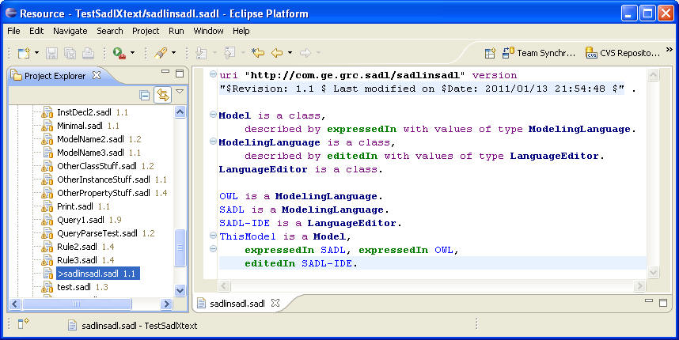

The Web Ontology Language (OWL) is an important, widely used semantic modeling language. Models in OWL provide a robust foundation upon which semantic rules can be added to capture additional domain knowledge.
The Semantic Application Design Language (SADL) provides an English-like language for building semantic models and authoring rules. The SADL Integrated Development Environment (SADL-IDE) is an Xtext-based set of Eclipse plug-ins for editing, maintaining, and managing models, rules, tests, and queries expressed in SADL. By default the SADL-IDE uses the Jena reasoner/rules engine and a SADL to Jena translator to save models as OWL files and rules in Jena rule format. However, the SADL-IDE is designed to accept any translator/reasoner pair conforming to the SADL plug-in architecture so models and rules can be saved to the required format for any target reasoner. This permits applications to use whatever reasoner provides the best reasoning capability for the domain. Currently SWI-Prolog is available as a reasoner. Previous versions of SADL supported the Pellet reasoner.
